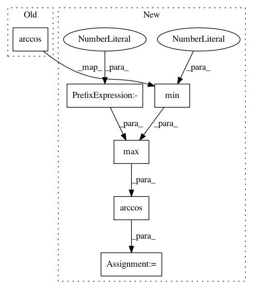

2bd7d6686cb8f39b7fce0d8ba7cad2ba44e04941,gqcnn/image_grasp_sampler.py,,force_closure,#Any#Any#Any#Any#Any#,31
Before Change
// compute cone membership
alpha = np.arctan(mu)
in_cone_1 = (np.arccos(n1.dot(-v)) < alpha)
in_cone_2 = (np.arccos(n2.dot(v)) < alpha)
return (in_cone_1 and in_cone_2)
After Change
// compute cone membership
alpha = np.arctan(mu)
dot_1 = max(min(n1.dot(-v), 1.0), -1.0)
dot_2 = max(min(n2.dot(v), 1.0), -1.0)
in_cone_1 = (np.arccos(dot_1) < alpha)
in_cone_2 = (np.arccos(dot_2) < alpha)
return (in_cone_1 and in_cone_2)
class DepthSamplingMode(object):
In pattern: SUPERPATTERN
Frequency: 3
Non-data size: 6
Instances
Project Name: BerkeleyAutomation/gqcnn
Commit Name: 2bd7d6686cb8f39b7fce0d8ba7cad2ba44e04941
Time: 2018-01-12
Author: jmahler@berkeley.edu
File Name: gqcnn/image_grasp_sampler.py
Class Name:
Method Name: force_closure
Project Name: BerkeleyAutomation/gqcnn
Commit Name: 2bd7d6686cb8f39b7fce0d8ba7cad2ba44e04941
Time: 2018-01-12
Author: jmahler@berkeley.edu
File Name: gqcnn/grasp.py
Class Name: Grasp2D
Method Name: image_dist
Project Name: BerkeleyAutomation/gqcnn
Commit Name: 2bd7d6686cb8f39b7fce0d8ba7cad2ba44e04941
Time: 2018-01-12
Author: jmahler@berkeley.edu
File Name: gqcnn/image_grasp_sampler.py
Class Name: DepthImageSuctionPointSampler
Method Name: _sample_suction_points